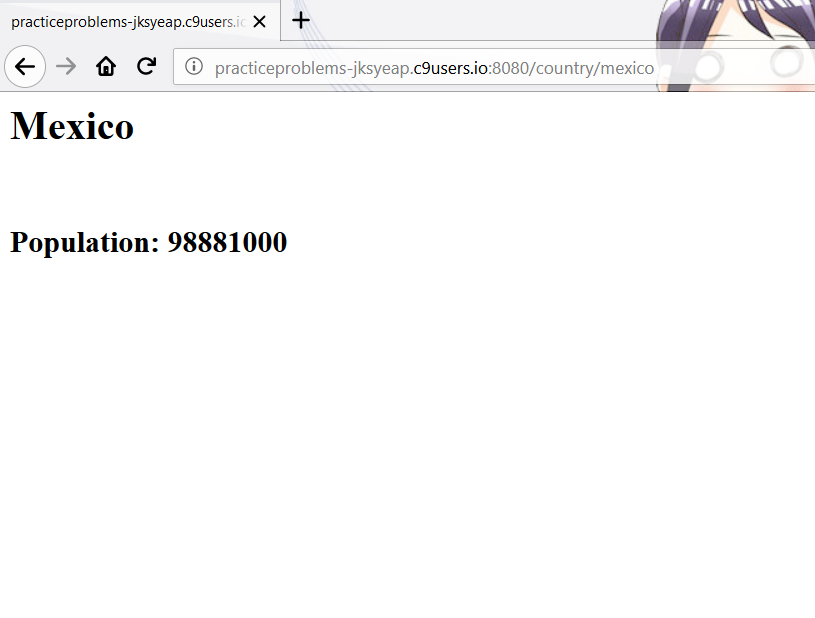
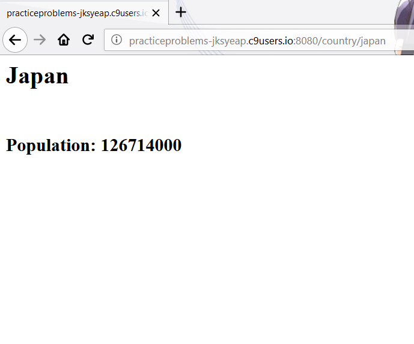

Week 2 Answers

-
Use "code" as the selector. There are 106 of these elements.
-
Use "pre code" as the selector. There are 36 of these elements
There are less of these elements because we have a condition
that the "code" element must now be the child of a "pre" element,
and not all "code" elements meet that condition. Use "figure" as the selector. There are 5 of these elements.
-
Use "img" as the selector. There are 6 of these elements. This is
different from the above because "figure" is like a container for
visual content, and a "figure" might contain more than one "img".
The "img" is just an image.
-
- 
- 
-
The DOM is the hierarchy in tree form that details the relationships between
elements, i.e. which elements are parents/children/siblings to which other
elements. The "html" element is at the root of the tree. Each node in the tree
can have associated attributes that help to select certain nodes or group
of nodes. The DOM is created from the source HTML, analogous to a parse
tree, but it might be different than the source because there are elements
that can be dynamically added through javascript, PHP, or some other method.